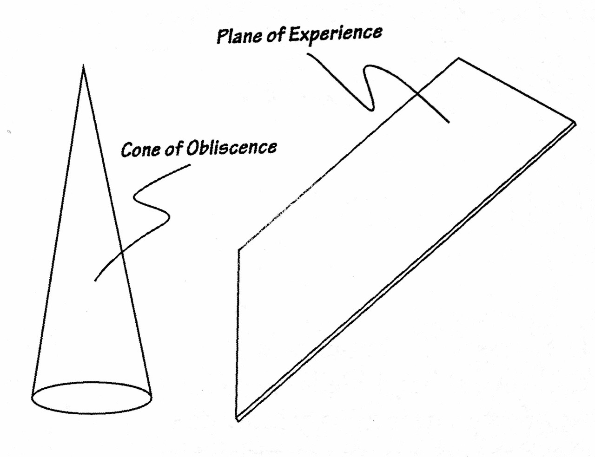

Sam Wenc (b 1990; Western Mass) is a multi-instrumentalist utilizing guitar, pedal steel guitar, vibraphone, electronics, and field recordings. Performing under the name Post Moves, he has shifted between songwriting, drone, modal, and process-based compositions. Inspired by Henry Flynt's concept of Avant-Garde Hillbilly music, he focuses on blurring concepts of "american" music.

"the singular music of pedal steel guitarist, Sam Wenc...takes an instrument that is usually associated in a cliche way and turns it into something very atmospheric and expansive" - John Schaefer, WNYC
"There’s a certain duality between nature and simulation at work on Unison of Motion, though one which is collapsing in the contemporary moment. Post Moves conjure that enduring sense of the vast American landscape, the sense of promise and nostalgia rolled into one, though this classic dream is shaped and distorted by technology to form a hyperreal present" - Various Small Flames